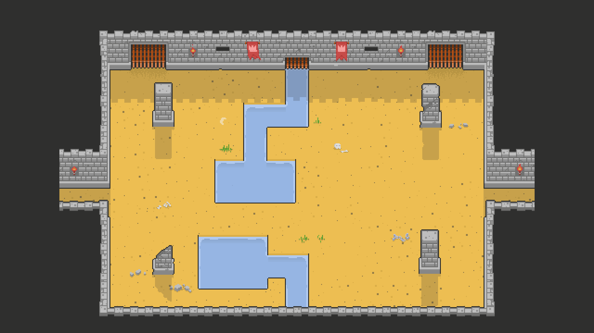

Making a Game (Part 1) - Basic Camera
by Dylan Wilson on 16 May 2019Introduction
In this series of tutorials I'll be making a game with MonoGame.Extended. Each tutorial will build upon the previous and have an accompanying sample on github. The samples are a snapshot of what the code looked like at the end of each tutorial. I recommend cloning the samples repository and taking a look at each sample in order to see the evolution of the game.
One of the challenges when making a tutorial series like this is finding enough good quality game art that can be used in an open source game project so that everyone can follow along.
I've been considering to do a tutorial series like this for years then one day I found the pixel art adventurer sprite pack and discovered Elthen's Patreon page. If you like Elthen's art, please consider supporting him on Patreon or buying one of his art packs. Without artists like him, this series would be almost impossible.
Let's get started
To create the project I'll be using the quick start guide from the getting started tutorial.
Once we've got the cornflower blue screen up and running we need to get some sprites on the screen. One of the best ways to prototype your game idea is to start with a static background image so that you can get a feel for what it will look like quickly.

Then cut out a single sprite as a placeholder for our player sprite and load these textures into the game.

_background = Content.Load<Texture2D>("background");
_adventurer = Content.Load<Texture2D>("adventurer");
And of course we can render these sprites to with the SpriteBatch.
_spriteBatch.Begin(samplerState: SamplerState.PointClamp);
_spriteBatch.Draw(_background, Vector2.Zero, Color.White);
_spriteBatch.Draw(_adventurer, Vector2.Zero, Color.White);
_spriteBatch.End();
Getting our player sprite moving is a little more involved. For details on how I did this please refer to the sample on github.
Creating the Camera

The first thing I like to implement when I'm starting a new game is a basic camera to get a feel for how things are going to move in the game. Not all games need a camera but it's often good to have one in place so that it's easier to add cool effects like screen shake later on.
When you're getting started making a game, it's easy to forget just how many different ways camera's can move games. In our game, we'll start with a basic position-locking camera that keeps focus on the player position. Then to make it a little more interesting we'll add a little lerp-smoothing.
First, add a camera field to your Game class.
private OrthographicCamera _camera;
In LoadContent or Initialize create the camera and set any initial properties.
_camera = new OrthographicCamera(GraphicsDevice) { Zoom = 2.0f };
Then apply the camera's transformation matrix to the scene. The simplest way to do this is to pass it into the SpriteBatch.Begin call.
_spriteBatch.Begin(transformMatrix: _camera.GetViewMatrix());
Camera Movement
The get things moving we can call several methods directly on the camera including Move, Rotate, ZoomIn and ZoomOut.
if (keyboardState.IsKeyDown(Keys.R))
_camera.ZoomIn(elapsedSeconds);
if (keyboardState.IsKeyDown(Keys.F))
_camera.ZoomOut(elapsedSeconds);
However, in our game what we actually want to do is keep the camera focused on our player. For that we can use the LookAt method.
_camera.LookAt(_player.Position);
Easy enough, but it's a little boring.
Lerp-Smoothing
There's actually a very easy way to spice things up and make our camera movement more interesting. The trick is to use the Vector2.Lerp function.
var cameraCenter = _camera.Position + _camera.Origin;
var lookAtPosition = Vector2.Lerp(cameraCenter, _player.Position, 0.05f);
_camera.LookAt(lookAtPosition);
What we're doing here telling the camera to look at a point 5% of the way between the camera's center position and the current player position. When we repeat this every frame in our
Update method the camera will continue to move towards the player until it eventually comes to stop creating a nice smooth movement. It's a simple but effective way to
achieve smooth movement in all sorts of things in your game.